Explore Other Projects


Got a project in mind?
Get in touch to see how we can collaborate on your project
Contact MeRole: UX Researcher
Industry: Consumer Goods & Services
Tools: Qualtrics, Miro
Date: Jan 2022 – Mar 2022
A product solution that helps Big W share product sustainability and traceability information with customers
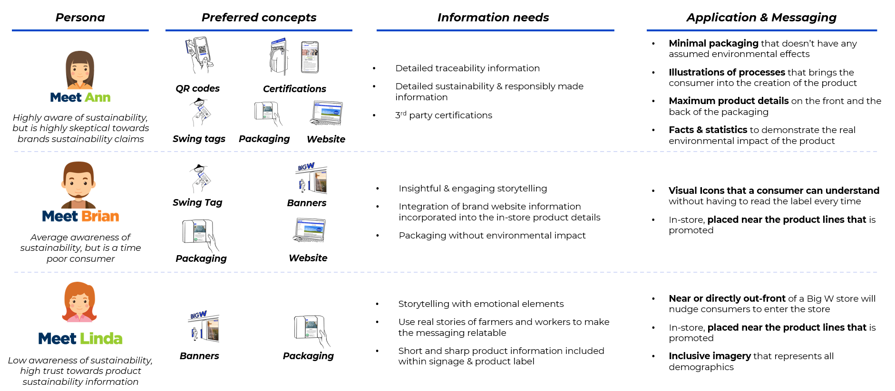
As sustainability and traceability became growing priorities in the apparel and home goods industry, Big W had made meaningful strides — yet research revealed a clear communication gap. Customers struggled to understand what terms like “sustainable” or “ethically made” actually meant and how these values translated across products, packaging, and digital touchpoints.
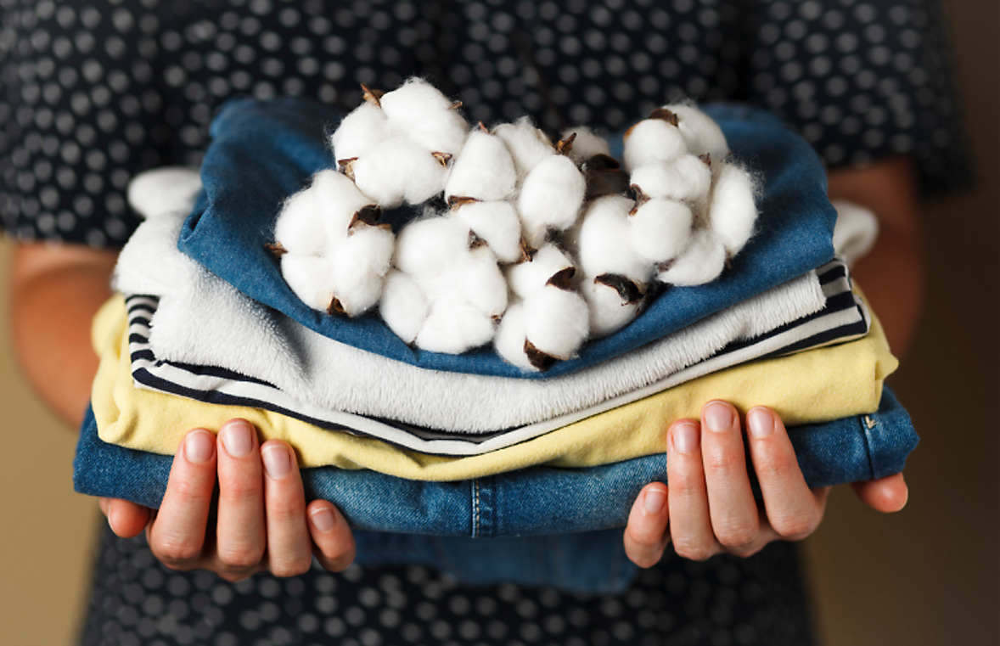
To bridge this gap, we conducted surveys to learn how Big W customers interpret sustainability messaging and where they seek product information. Insights showed a strong desire for clarity, consistency, and transparency in how sustainability stories are told.
We then ran in-depth interviews to understand how shoppers make sense of eco-labels, online descriptions, and in-store signage — uncovering both confusion and a genuine curiosity to engage when information felt trustworthy.
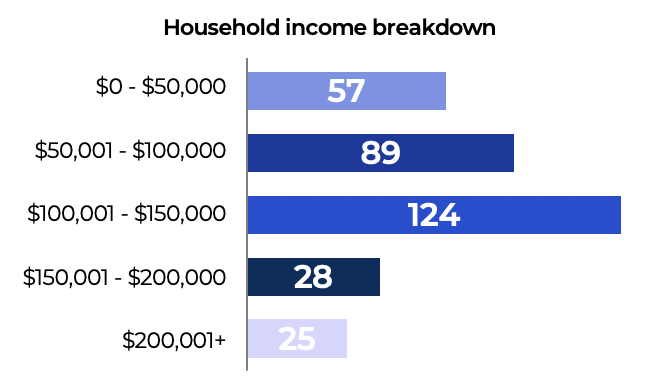
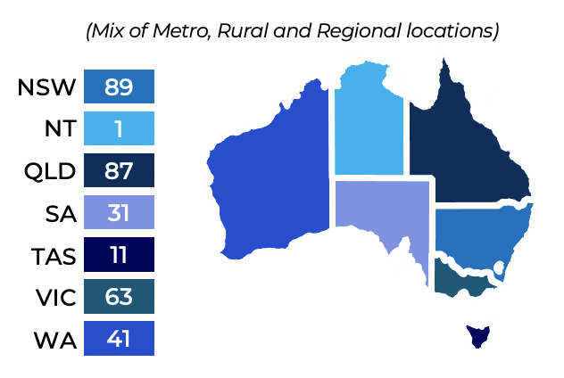
Through affinity mapping, we synthesized user needs and pain points, leading to the creation of three key personas that captured distinct consumer motivations and guided our ideation process.
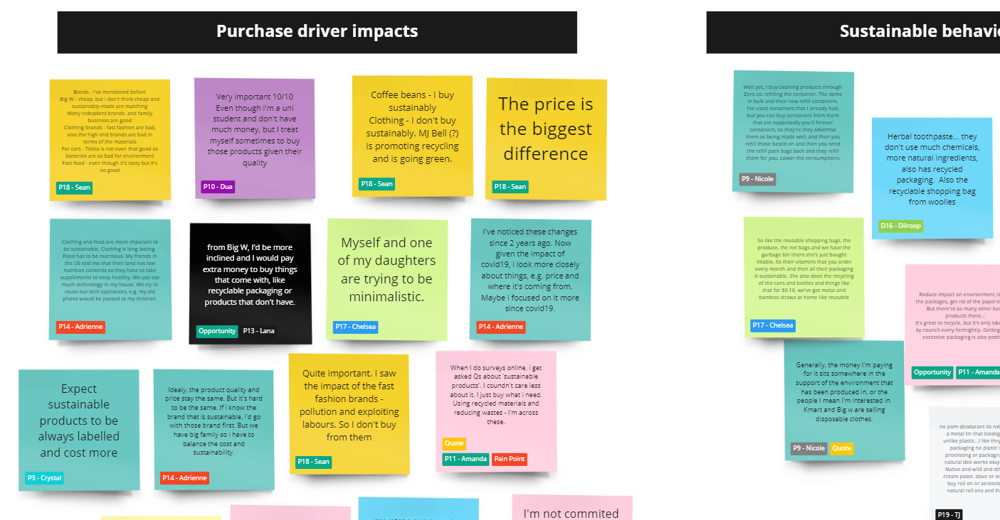
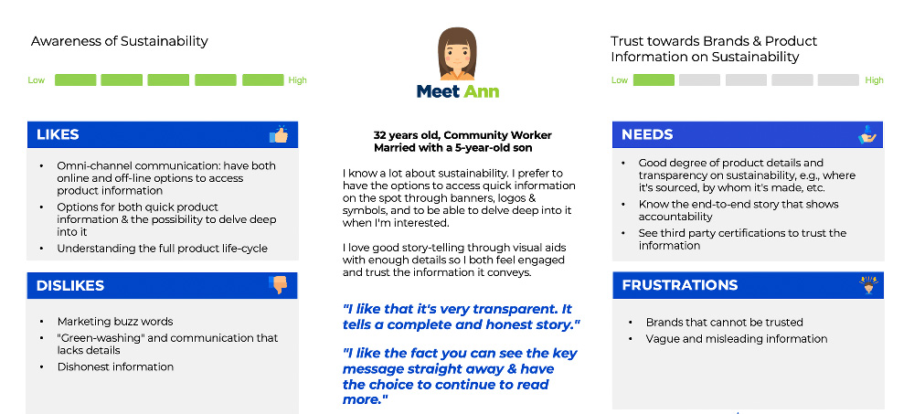
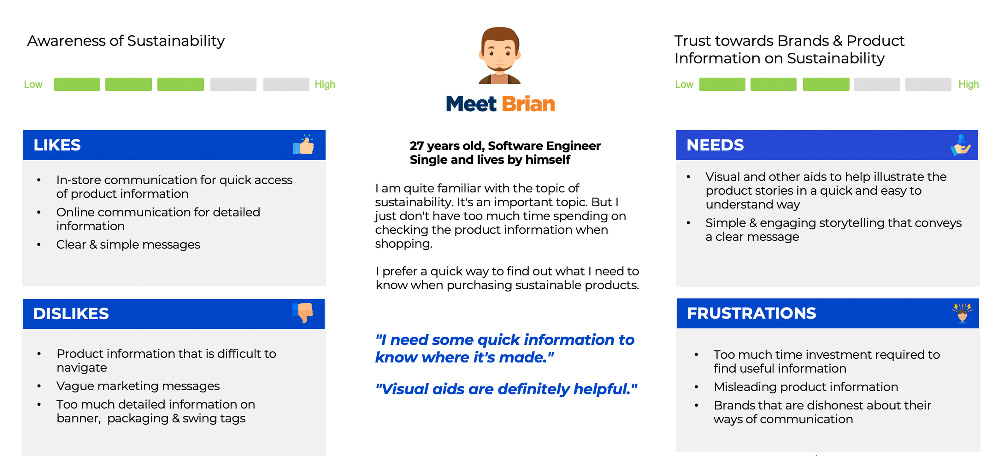
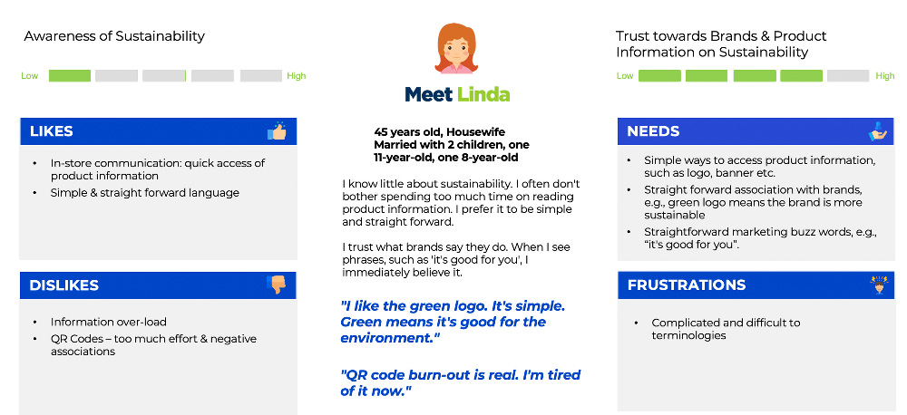
Using these insights, we developed and storyboarded four concept directions exploring how Big W could communicate sustainability both online and in-store. We tested these through focus groups to refine the visual language, messaging tone, and overall user experience.
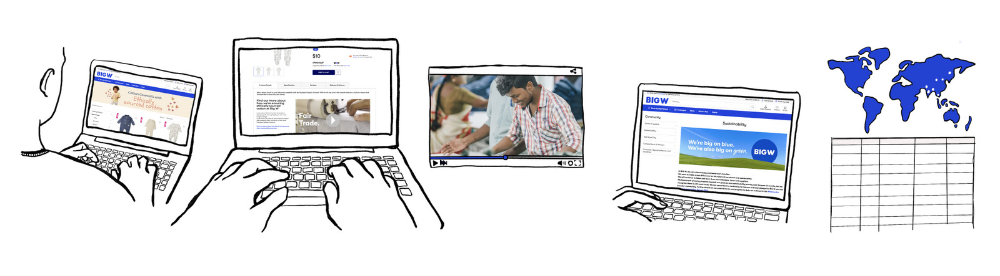
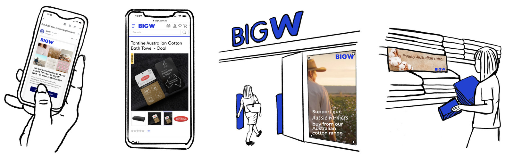
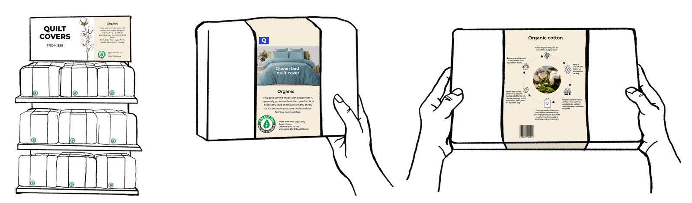
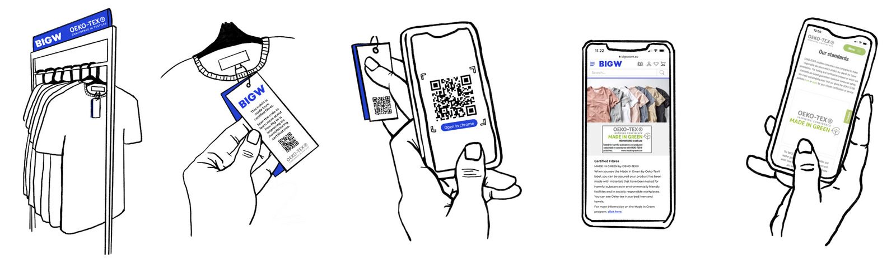
The project uncovered new opportunities to align digital and physical experiences around a unified sustainability narrative. Our recommendations included clearer packaging communication, interactive traceability features, and consistent sustainability messaging across all customer touchpoints — strengthening both transparency and brand trust.
Get in touch to see how we can collaborate on your project
Contact Me